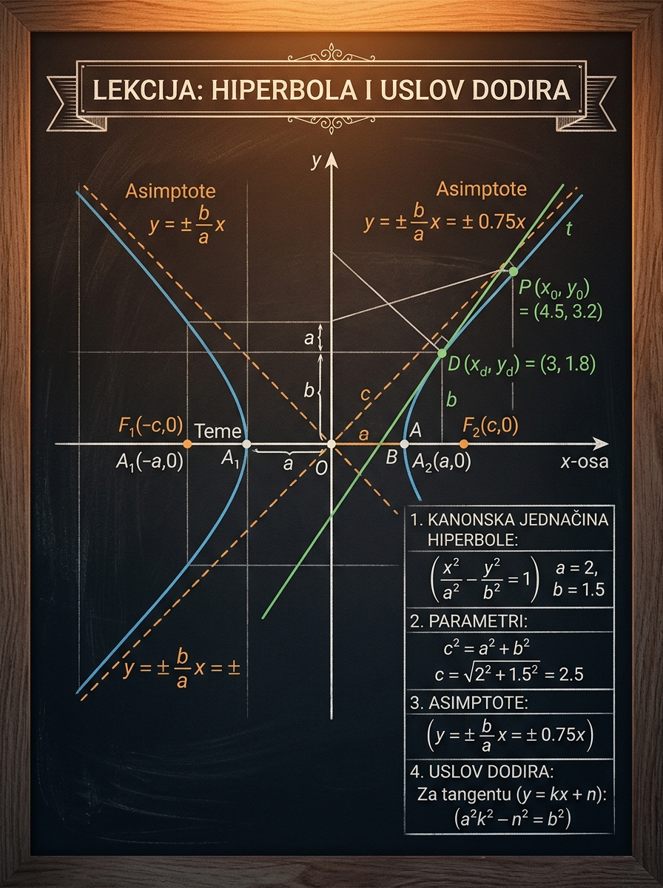

Kanonske oblike hiperbole, žiže, ekscentricitet, asimptote i dve glavne formule za tangente.
Matoteka znanje · Lekcija 53
Hiperbola i uslov dodira
Hiperbola je lekcija u kojoj učenik konačno mora da poveže formulu, sliku i prijemni refleks. Nije dovoljno znati samo kanonsku jednačinu: moraš da vidiš kako grane prate asimptote, kako se iz parametara čitaju žiže i kada prava zaista može da bude tangenta.
Mešanje formule \(c^2=a^2+b^2\) sa elipsom i ignorisanje toga da nagib tangente mora da poštuje asimptote.
Tangente paralelne datoj pravoj, tangenta u poznatoj tački i tangente kroz spoljašnju tačku.

Hiperbola proverava da li stvarno razumeš analitičku geometriju
Kod kružnice i elipse učenik još može da se osloni na relativno stabilnu intuiciju zatvorene krive. Kod hiperbole to više nije dovoljno. Grane se otvaraju, žiže su dalje od temena, pojavljuju se asimptote, a sama činjenica da prava ima ili nema presek zavisi veoma osetljivo od nagiba.
Zašto je bitna za dalji tok gradiva
Hiperbola te tera da čitaš jednačinu kao geometrijski objekat, a ne samo kao simbolički zapis. To je ista vrsta razmišljanja koja se kasnije traži kod funkcija, derivacija i optimizacionih zadataka.
- Učiš da kanonski oblik odmah pretvoriš u sliku u koordinatnom sistemu.
- Vežbaš precizan rad sa parametrima i diskriminantom.
- Razvijaš osećaj za granične slučajeve: sečica, tangenta, spoljašnja prava, asimptota.
Zašto je važna na prijemnom
Prijemni zadaci retko pitaju hiperbolu samo deklarativno. Obično te stave u situaciju da iz formula brzo izvučeš zaključak.
- Da li data prava može biti tangenta?
- Nađi tangente paralelne zadatoj pravoj.
- Kroz spoljašnju tačku povuci tangente na hiperbolu.
- Prepoznaj asimptote i iskoristi ih kao orijentir u skici i proveri računa.
Ako želiš brži napredak, nemoj pamtiti hiperbolu kao izolovanu formulu. Posmatraj je kao porodicu zadataka u kojima su nagib prave, asimptote i diskriminanta stalno povezani.
Kako da čitaš hiperbolu iz kanonske jednačine
Prvi zadatak učenika nije da napamet izgovori formulu, već da iz nje pročita orijentaciju grana, položaj temena i odnos parametara \(a\), \(b\) i \(c\). Tek posle toga uslov dodira ima smisla.
Horizontalna hiperbola
Kada je pozitivni član uz \(x^2\), najčešći kanonski oblik je:
\[
\frac{x^2}{a^2}-\frac{y^2}{b^2}=1, \qquad a>0,\; b>0
\]
Grane se otvaraju ulevo i udesno. Temena su u tačkama \((\pm a,0)\), a žiže u \((\pm c,0)\), gde važi:
\[
c^2=a^2+b^2
\]
Pošto je \(c>a\), žiže su uvek dalje od centra nego temena. To je dobar mentalni signal da ne mešaš hiperbolu sa elipsom.
Vertikalna hiperbola
Kada je pozitivni član uz \(y^2\), dobijaš drugi standardni oblik:
\[
\frac{y^2}{a^2}-\frac{x^2}{b^2}=1
\]
Tada se grane otvaraju nagore i nadole. Temena su \((0,\pm a)\), a žiže \((0,\pm c)\), pri čemu opet važi \(c^2=a^2+b^2\). Ekscentricitet je \(e=\frac{c}{a}>1\), kao i u horizontalnom slučaju.
U oba oblika formula za \(c\) je ista. Menja se samo osa duž koje leže temena i žiže.
| Oblik | Temena | Žiže | Ekscentricitet |
|---|---|---|---|
| \( \frac{x^2}{a^2}-\frac{y^2}{b^2}=1 \) | \((\pm a,0)\) | \((\pm c,0)\) | \(e=\frac{c}{a}>1\) |
| \( \frac{y^2}{a^2}-\frac{x^2}{b^2}=1 \) | \((0,\pm a)\) | \((0,\pm c)\) | \(e=\frac{c}{a}>1\) |
Dva odvojena kraka
Za razliku od elipse, hiperbola nema zatvorenu konturu. Zato pitanja o preseku sa pravom često zavise od nagiba mnogo više nego što učenik očekuje.
\(c\) je veći od glavnog poluprečnika
Ako ti u računu ispadne da je \(c\) manje od parametra koji vodi do temena, gotovo sigurno si greškom upotrebio elipsinu formulu \(c^2=a^2-b^2\).
Šta prvo gledaš na ispitu
Koji kvadrat nosi plus, gde su temena i kakav je položaj asimptota. To ti već u startu govori koje nagibe može da ima tangenta.
Mikro-provera: zašto za hiperbolu važi \(e>1\)?
Pošto je \(c^2=a^2+b^2\), žiža je dalje od centra nego teme. Zato je ekscentricitet, koji se računa kao odnos \(c\) i poluose na kojoj leže temena, uvek veći od \(1\). To hiperbolu jasno odvaja od elipse.
Asimptote su kompas koji vodi grane hiperbole
Učenici često vide asimptote samo kao dodatnu formulu za crtanje. To je preusko razumevanje. Asimptote daju pravac u kome grane odlaze i odmah ti govore kakav nagib mora da ima moguća tangenta.
Formula za asimptote
Asimptote zavise od orijentacije hiperbole:
\[
\frac{x^2}{a^2}-\frac{y^2}{b^2}=1
\Rightarrow
y=\pm \frac{b}{a}x
\]
\[
\frac{y^2}{a^2}-\frac{x^2}{b^2}=1
\Rightarrow
y=\pm \frac{a}{b}x
\]
Horizontalna hiperbola ide ulevo i udesno, a vertikalna nagore i nadole. Zato i odnos brojeva u nagibu asimptote mora da prati osovinu duž koje se grane otvaraju.
Geometrijsko značenje
Kada je tačka na hiperboli veoma daleko od centra, grana joj prilazi sve bliže, ali je nikada ne seče. Zato asimptote nisu tangente u "beskonačno dalekoj tački", već granični pravci kretanja.
- Koriste se kao okvir za skicu.
- Pomažu u proveri da li je dobijena prava realno moguća tangenta.
- Na prijemnom štede vreme jer odmah filtriraju nemoguće nagibe.
Tangenta mora da bude strmija
Ako je prava oblika \(y=kx+l\) i hiperbola je \(x^2/a^2-y^2/b^2=1\), tangentni nagib mora zadovoljiti \(|k|\ge \frac{b}{a}\).
Tangenta mora da bude blaža
Za hiperbolu \(y^2/a^2-x^2/b^2=1\) uslov ide u suprotnom smeru: \(|k|\le \frac{a}{b}\).
Poredi nagib sa asimptotom pre računa
Ako je nagib dat u zadatku, često možeš unapred da znaš da li tangenta postoji, još pre nego što pišeš diskriminantu.
Asimptote nisu ukras. One su najbrža vizuelna provera da li je tvoj rezultat smislen. Ako navodna tangenta horizontalne hiperbole ima nagib manji od nagiba asimptote, rezultat je pogrešan.
Mikro-provera: da li grana hiperbole može da preseče svoju asimptotu?
Ne. Asimptota je pravac kome se grana približava kada koordinata ide ka beskonačnosti, ali joj nikada ne pripada. Ako bi se sekle, izgubila bi se upravo ideja asimptotskog približavanja.
Prava dodiruje hiperbolu kada sistem pređe u dvostruko rešenje
Kao i kod elipse, prava je tangenta kada sistem jednačina ima jedno realno dvostruko rešenje. Razlika je u tome što ovde asimptote dodatno diktiraju koji nagibi uopšte imaju šansu da daju dodir.
Horizontalna hiperbola i prava \(y=kx+l\)
Za hiperbolu
\[
\frac{x^2}{a^2}-\frac{y^2}{b^2}=1
\]
i pravu \(y=kx+l\), posle zamene dobijaš kvadratnu jednačinu po \(x\):
\[
(b^2-a^2k^2)x^2-2a^2kl\,x-a^2(l^2+b^2)=0
\]
Tangenta znači \(\Delta=0\), pa posle sređivanja dobijaš:
\[
l^2=a^2k^2-b^2
\]
Odmah vidiš važnu posledicu: desna strana mora biti nenegativna. Zato je potrebno \(|k|\ge \frac{b}{a}\).
Vertikalna hiperbola i varijanta uslova
Za hiperbolu
\[
\frac{y^2}{a^2}-\frac{x^2}{b^2}=1
\]
isti postupak vodi do uslova:
\[
l^2=a^2-b^2k^2
\]
Ovde je slika obrnuta: da bi tangenta postojala, mora važiti \(|k|\le \frac{a}{b}\). Dakle, grane i asimptote ne određuju samo estetiku crteža, nego i samu algebru.
Uslov dodira je brz, ali nije magičan. Prvo moraš da prepoznaš koji je kanonski oblik i oko koje ose se hiperbola otvara.
Tangenta u poznatoj tački
Ako je \(P(x_0,y_0)\) tačka hiperbole \( \frac{x^2}{a^2}-\frac{y^2}{b^2}=1 \), tangentna jednačina glasi:
\[
\frac{xx_0}{a^2}-\frac{yy_0}{b^2}=1
\]
To je najbrži put kada je tačka dodira već poznata. Obavezno pre toga proveri da \(P\) zaista leži na hiperboli.
- Za \(P(a,0)\) dobijaš vertikalnu tangentu \(x=a\).
- Za \(P(-a,0)\) dobijaš \(x=-a\).
- Za vertikalnu hiperbolu analogna formula glasi \( \frac{yy_0}{a^2}-\frac{xx_0}{b^2}=1 \).
- Formula \(y=kx+l\) ne pokriva vertikalne tangente, pa je ova forma zaštita od greške.
Kako rešavaš zadatke kroz spoljašnju tačku
Ako prava mora da prođe kroz tačku \(A(x_1,y_1)\), napišeš je kao:
\[
y=kx+(y_1-kx_1)
\]
Tada je \(l=y_1-kx_1\), pa taj izraz ubacuješ u uslov dodira. Dobijaš jednačinu po \(k\). Svako realno rešenje predstavlja jednu tangentu.
Broj tangenti zavisi od položaja tačke: spoljašnja tačka može dati dve, tačka na hiperboli jednu, a neke tačke ne daju nijednu realnu tangentu.
Mikro-provera: zašto horizontalna hiperbola ne može imati tangentu sa nagibom manjim od nagiba asimptote?
Jer bi tada u uslovu \(l^2=a^2k^2-b^2\) desna strana bila negativna. Pošto \(l^2\) ne može biti negativan broj, takva tangenta ne postoji.
Canvas laboratorija: promeni parametre i gledaj kako asimptote kontrolišu dodir
U ovoj laboratoriji možeš da prebacuješ orijentaciju hiperbole, menjaš parametre \(a\), \(b\), nagib \(k\) i odsečak \(l\). Posebno prati odnos između prave i asimptota: on gotovo uvek unapred najavi da li je prava sečica, tangenta ili spoljašnja.
Prvo uključi preset „Tangenta", pa zatim menjaj nagib i gledaj kako se položaj dodira raspada čim napustiš dozvoljen opseg.
Zlatne tačke su temena, plave su žiže, isprekidane linije su asimptote, a svetloplava prava je \(y=kx+l\).
Rešenja koja treba čitati sporo i sa razlogom za svaki korak
Nemoj ove primere čitati kao gotov recept. Posmatraj kojim redom se donose odluke: prvo prepoznavanje tipa hiperbole, zatim izbor formule, pa tek onda račun.
Primer 1: čitanje parametara iz jednačine
Za hiperbolu \( \frac{x^2}{9}-\frac{y^2}{16}=1 \) odredi temena, žiže, ekscentricitet i asimptote.
Osnovni model
- Prepoznaj oblik. Plus je uz \(x^2\), pa je hiperbola horizontalna.
- Pročitaj parametre. \(a^2=9\Rightarrow a=3\), \(b^2=16\Rightarrow b=4\).
- Nađi žiže. Važi \(c^2=a^2+b^2=25\), pa je \(c=5\).
- Napiši geometrijske podatke. Temena su \((\pm3,0)\), žiže \((\pm5,0)\).
- Ekscentricitet i asimptote. \(e=\frac{5}{3}\), a asimptote su \(y=\pm\frac{4}{3}x\).
\[
V_1(-3,0),\;V_2(3,0),\qquad F_1(-5,0),\;F_2(5,0),\qquad y=\pm\frac{4}{3}x
\]
Ovo izgleda lako, ali baš tu nastaje mnogo grešaka. Ako ovde pogrešiš \(c\), svaki naredni zaključak pada.
Primer 2: tangente paralelne zadatoj pravoj
Nađi tangente hiperbole \( \frac{x^2}{16}-\frac{y^2}{9}=1 \) koje su paralelne pravoj \(y=2x\).
Prijemni klasik
- Zadrži nagib. Paralelne prave imaju isti nagib, pa tražimo tangente oblika \(y=2x+l\).
- Primeni uslov dodira. Za horizontalnu hiperbolu važi \(l^2=a^2k^2-b^2\).
- Uvrsti podatke. Ovde je \(a^2=16\), \(b^2=9\), \(k=2\), pa je: \[ l^2=16\cdot 4-9=55 \]
- Zaključi. \(l=\pm\sqrt{55}\), pa postoje dve tangente.
\[
y=2x+\sqrt{55}
\qquad \text{i} \qquad
y=2x-\sqrt{55}
\]
Geometrijski je sasvim prirodno da postoje dve paralelne tangente: jedna dodiruje gornju, a druga donju granu desno i levo u simetričnim položajima.
Primer 3: tangenta u poznatoj tački
Nađi tangentu hiperbole \( \frac{x^2}{9}-\frac{y^2}{16}=1 \) u tački \(P\left(5,\frac{16}{3}\right)\).
Brza formula
- Prvo proveri tačku. \[ \frac{25}{9}-\frac{(16/3)^2}{16} = \frac{25}{9}-\frac{16}{9} =1 \] Dakle, tačka zaista leži na hiperboli.
- Primeni tangentu u tački. \[ \frac{xx_0}{a^2}-\frac{yy_0}{b^2}=1 \]
- Uvrsti \(x_0=5\), \(y_0=\frac{16}{3}\), \(a^2=9\), \(b^2=16\). \[ \frac{5x}{9}-\frac{y}{3}=1 \]
- Sredi jednačinu. \[ 5x-3y=9 \]
Ovaj primer je važan jer pokazuje koliko vremena štedi prava formula. Da si ovde išao preko opšte prave i diskriminante, račun bi bio duži bez potrebe.
Primer 4: tangente kroz spoljašnju tačku
Kroz tačku \(A(0,5)\) povuci tangente na hiperbolu \( \frac{x^2}{4}-y^2=1 \).
Dublji nivo
- Napiši opštu pravu kroz tačku. Svaka takva prava ima oblik \(y=kx+5\).
- Prepoznaj parametre hiperbole. \(a^2=4\), \(b^2=1\).
- Primeni uslov dodira. \[ l^2=a^2k^2-b^2 \] Pošto je \(l=5\), dobijaš: \[ 25=4k^2-1 \]
- Reši po \(k\). \[ 4k^2=26 \Rightarrow k^2=\frac{13}{2} \Rightarrow k=\pm\frac{\sqrt{26}}{2} \]
- Zapiši tangente. \[ y=\frac{\sqrt{26}}{2}x+5 \qquad \text{i} \qquad y=-\frac{\sqrt{26}}{2}x+5 \]
Ovde je bitno da tačku ne pokušavaš da „ubaciš" u hiperbolu. Ona je samo uslov kroz koji prava mora proći.
Ključna poruka iz primera
Kada je poznat nagib, tražiš \(l\). Kada je poznata tačka kroz koju prava prolazi, pišeš \(l\) preko \(k\). Kada je poznata tačka dodira, koristiš tangentnu jednačinu u tački i preskačeš diskriminantu.
Formula-vault koji treba da ti bude pregledan, a ne nabuban
Ove formule nisu za slepo memorisanje. Svaku treba vezati za situaciju u kojoj se koristi.
Kanonski oblici
\[
\frac{x^2}{a^2}-\frac{y^2}{b^2}=1
\qquad
\frac{y^2}{a^2}-\frac{x^2}{b^2}=1
\]
Prvi je horizontalna, drugi vertikalna hiperbola.
Žiže i ekscentricitet
\[
c^2=a^2+b^2,
\qquad
e=\frac{c}{a}>1
\]
Ako dobiješ \(e<1\), sigurno si pomešao hiperbolu sa elipsom ili si pogrešno pročitao poluosu duž koje leže temena.
Asimptote
\[
\frac{x^2}{a^2}-\frac{y^2}{b^2}=1 \Rightarrow y=\pm\frac{b}{a}x
\]
\[
\frac{y^2}{a^2}-\frac{x^2}{b^2}=1 \Rightarrow y=\pm\frac{a}{b}x
\]
Najbrža vizuelna provera položaja grana i mogućih nagiba tangente.
Uslov dodira: horizontalna
\[
l^2=a^2k^2-b^2
\]
Važi za pravu \(y=kx+l\) i hiperbolu \(x^2/a^2-y^2/b^2=1\).
Uslov dodira: vertikalna
\[
l^2=a^2-b^2k^2
\]
Važi za pravu \(y=kx+l\) i hiperbolu \(y^2/a^2-x^2/b^2=1\).
Tangenta u tački
\[
\frac{xx_0}{a^2}-\frac{yy_0}{b^2}=1
\]
\[
\frac{yy_0}{a^2}-\frac{xx_0}{b^2}=1
\]
Prva formula je za horizontalnu, a druga za vertikalnu hiperbolu kada je poznata tačka dodira.
Greške koje prave čak i učenici koji znaju formule
U ovoj lekciji nije dovoljno „znati formulu". Veći deo grešaka nastaje zato što učenik ne proveri da li formula odgovara baš toj orijentaciji i baš tom tipu zadatka.
Pomešana formula za \(c\)
Za hiperbolu važi \(c^2=a^2+b^2\), a ne \(a^2-b^2\). Ovo je najčešći refleks posle elipse.
Zaboravljena orijentacija
Uslov \(l^2=a^2k^2-b^2\) nije univerzalan. On važi za horizontalnu hiperbolu. Za vertikalnu važi \(l^2=a^2-b^2k^2\).
Ignorisane asimptote
Dobijena tangenta deluje „algebarski tačno", ali nagib ne poštuje položaj asimptota. To je signal da je račun pogrešno postavljen.
Bez provere tačke dodira
Učenik odmah koristi formulu tangente u tački, a da prethodno nije proverio da tačka uopšte leži na hiperboli.
Tangente paralelne koordinatnim osama nestanu iz vida
Oblik \(y=kx+l\) ne vidi vertikalne tangente \(x=\pm a\) kod horizontalne hiperbole, a lako se zaborave i horizontalne tangente \(y=\pm a\) kod vertikalne.
Napamet račun bez skice
Kratka skica sa asimptotama često odmah pokaže da li rezultat ima smisla. Bez toga raste rizik od formalno uredne, ali geometrijski pogrešne jednačine.
Kako se hiperbola zaista pojavljuje na prijemnom
Na prijemnom se hiperbola često uvodi indirektno: kroz tangentu, kroz spoljašnju tačku, kroz informaciju o asimptoti ili kroz poređenje sa elipsom. Zato je važno da imaš kratku proceduru koju možeš da pokreneš pod pritiskom vremena.
Tipični obrasci zadataka
- Zadati su hiperbola i nagib prave, a traže se tangente paralelne toj pravoj.
- Zadata je spoljašnja tačka, pa treba naći jednu ili dve tangente.
- Data je tačka na hiperboli i traži se jednačina tangente ili normale.
- Traže se žiže i asimptote kao deo rekonstrukcije nepoznate hiperbole.
Checklist koji vredi na ispitu
- Prepoznaj orijentaciju hiperbole.
- Pročitaj \(a\), \(b\) i po potrebi izračunaj \(c\).
- Nacrtaj makar mentalno ili na margini asimptote.
- Odluči da li je zadatak za uslov dodira ili tangentu u tački.
- Proveri da li je dobijeni nagib kompatibilan sa asimptotama.
Na prijemnom ne pobeđuje učenik koji zna najviše formula, nego učenik koji za 20 sekundi prepozna koja formula ovde uopšte ima pravo da se koristi.
Kratki zadaci za samostalnu proveru
Pokušaj da ih uradiš bez gledanja u rešenje. Ako zapneš, prvo probaj da napišeš skicu i izdvojiš tip zadatka.
Vežba 1
Za hiperbolu \( \frac{x^2}{36}-\frac{y^2}{9}=1 \) odredi temena, žiže i asimptote.
Rešenje
\(a=6\), \(b=3\), pa je \(c^2=36+9=45\), odnosno \(c=3\sqrt5\). Temena su \((\pm6,0)\), žiže \((\pm3\sqrt5,0)\), a asimptote \(y=\pm\frac{1}{2}x\).
Vežba 2
Proveri da li prava \(y=x+2\) može biti tangenta hiperbole \( \frac{x^2}{9}-\frac{y^2}{4}=1 \).
Rešenje
Ovde su \(k=1\), \(l=2\), \(a^2=9\), \(b^2=4\). Za tangentu bi moralo važiti \(l^2=a^2k^2-b^2\), odnosno \(4=9-4=5\), što nije tačno. Dakle, prava nije tangenta.
Vežba 3
Nađi tangente hiperbole \( \frac{x^2}{25}-\frac{y^2}{16}=1 \) paralelne pravoj \(y=3x\).
Rešenje
Tražimo \(y=3x+l\). Uslov dodira daje \(l^2=25\cdot9-16=209\), pa su tangente \(y=3x+\sqrt{209}\) i \(y=3x-\sqrt{209}\).
Vežba 4
Nađi tangentu hiperbole \( \frac{x^2}{9}-\frac{y^2}{16}=1 \) u tački \(P\left(5,\frac{16}{3}\right)\).
Rešenje
Pošto tačka leži na hiperboli, koristiš formulu \( \frac{xx_0}{a^2}-\frac{yy_0}{b^2}=1 \). Dobijaš \( \frac{5x}{9}-\frac{y}{3}=1 \), odnosno \(5x-3y=9\).
Vežba 5
Za vertikalnu hiperbolu \( \frac{y^2}{9}-\frac{x^2}{4}=1 \), proveri da li postoji tangenta oblika \(y=2x+l\).
Rešenje
Za vertikalnu hiperbolu uslov dodira je \(l^2=a^2-b^2k^2\). Ovde je \(a^2=9\), \(b^2=4\), \(k=2\), pa je desna strana \(9-16=-7\), što je nemoguće. Tangenta tog nagiba ne postoji.
Vežba 6
Kroz tačku \(A(0,4)\) povuci tangente na hiperbolu \( \frac{x^2}{9}-\frac{y^2}{4}=1 \).
Rešenje
Prava kroz tačku je \(y=kx+4\). Uslov dodira daje \(16=9k^2-4\), pa je \(9k^2=20\), odnosno \(k=\pm\frac{2\sqrt5}{3}\). Tangente su \(y=\frac{2\sqrt5}{3}x+4\) i \(y=-\frac{2\sqrt5}{3}x+4\).
Šta mora da ostane u glavi posle ove lekcije
1. Prvo čitaš oblik
Koji kvadrat nosi plus odmah određuje orijentaciju hiperbole i raspored temena i žiža.
2. Asimptote nisu dodatak
Asimptote su tvoj najbrži vodič za skicu i proveru da li je nagib tangente uopšte moguć: \(y=\pm \frac{b}{a}x\) ili \(y=\pm \frac{a}{b}x\), zavisno od orijentacije.
3. Formula za žiže je drugačija nego kod elipse
Za hiperbolu važi \(c^2=a^2+b^2\), pa je ekscentricitet uvek veći od jedan.
4. Uslov dodira zavisi od orijentacije
Horizontalna: \(l^2=a^2k^2-b^2\). Vertikalna: \(l^2=a^2-b^2k^2\).
5. Kad je tačka dodira poznata, ne komplikuj
Tada koristiš tangentnu jednačinu u tački i preskačeš duži račun sa diskriminantom.
6. Sledeći logičan korak
Posle ove lekcije prirodno je da pređeš na parabolu i uporediš kako se menja uloga fokusa, direktrise i uslova dodira.